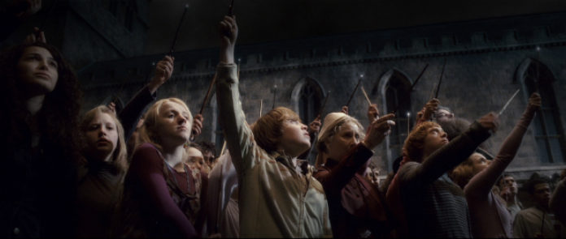

Dumbledore's Army (also known as the D.A.) was a secret organisation initiated by Harry Potter, Hermione Granger, and Ron Weasley to teach their fellow Hogwarts colleagues proper Defence Against the Dark Arts in 1995. It was founded by Hermione, but taught and led by Harry.
It was restarted by Neville Longbottom, Ginny Weasley, and Luna Lovegood during the 1997-1998 school year after Hogwarts fell under the control of Lord Voldemort in order to oppose Death Eater professors Alecto and Amycus Carrow, who spread propaganda against Muggles and Muggle-borns and taught the Dark Arts.
Dumbledore's Army played a vital role during the Second Wizarding War, and members of the organisation fought in the Battle of the Department of Mysteries, the Battle of the Astronomy Tower, and the Battle of Hogwarts.
Professor Albus Percival Wulfric Brian Dumbledore, O.M. (First Class), Grand Sorc., D. Wiz., X.J. (sorc.), S. of Mag.Q. (c. Summer 1881 – 30 June, 1997) was the Transfiguration Professor, and later Headmaster of Hogwarts School of Witchcraft and Wizardry,considered by many as the greatest Headmaster to ever grace Hogwarts.
It was through Dumbledore that resistance to the rise of Lord Voldemort was formed, as it was he who founded and led both the first and second Order of the Phoenix. Due to the fact that he had a keen mind and legendary power, Dumbledore became the only wizard that Voldemort ever feared.
Though he was no longer alive at the time, it was through Dumbledore's manipulations that Voldemort was ultimately defeated and peace restored to the wizarding world.